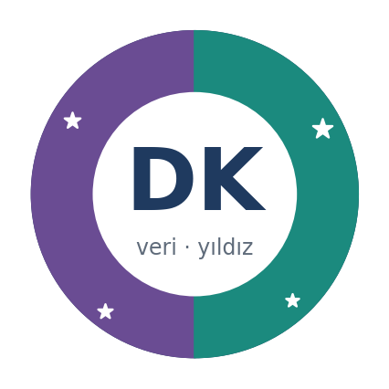

- Ana sayfa
- Örnek portfolyo
- Bölüm 1–3
Deniz K.'nın yıl sonu portfolyosu
Yazılım ve Yapay Zekâ ile Bilim ve Keşif atölyelerini seçen kurgusal bir öğrencinin, kılavuzun bütün kurallarına uygun hazırlanmış bitmiş portfolyosu.
Bu sitede örnek portfolyo bölüm bölüm 7 sayfaya ayrılmıştır; içeriğin tamamı buradadır. Öğrencinin teslim edeceği biçimdeki tam hâlini indirebilirsin:
Örnek portfolyo (Deniz K.)
Kurgusal bir öğrencinin bitmiş portfolyosu, teslim edileceği biçimde.
Kapak
Kılavuzda Genel yapı, 1. bölüm: Kapak

Deniz K.
Küçükçekmece Çocuk Üniversitesi, 6. sınıf, 2026–2027
YZYazılım ve Yapay Zekâ Laboratuvarı BKBilim ve Keşif Laboratuvarı (Astronomi)
Amblemim: Mor yarı yazılımı, yeşil yarı gökyüzünü temsil ediyor. Ortadaki boşluk, ikisini birleştireceğim projeye ayırdığım yer.
Ben kimim?
Kılavuzda Genel yapı, 2. bölüm: Ben kimim?
Merhaba, ben Deniz. Bu, Çocuk Üniversitesi’ndeki üçüncü yılım. Kendimi üç kelimeyle anlatmam gerekse meraklı, inatçı ve takım oyuncusu derdim. İnatçılığım bazen işe yarıyor: Bir kod çalışmayınca bırakamıyorum. Bazen de yaramıyor; bunu ekip defterinde anlattım.
Okul dışında neler yapmayı seviyorum?
Satranç oynamayı, belgesel izlemeyi ve akşamları balkondan gökyüzüne bakmayı seviyorum. Geçen yaz dedemin eski dürbünüyle Ay’ın kraterlerini ilk kez gördüm. O gece aklıma bir soru takıldı: “Bunu bir bilgisayar da görebilir mi?”
Bu iki atölyeyi neden seçtim?
Yazılım ve Yapay Zekâ Laboratuvarı’nı seçtim çünkü 5. sınıfta Kodlama ve Robotik dersinde Scratch ile oyun yaptım, mBot’u programladım; ama yapay zekânın içinde ne olduğunu hiç bilmiyordum. Sadece “her şeyi bilen bir sohbet robotu” sanıyordum.
Bilim ve Keşif Laboratuvarı’nı seçtim çünkü gökyüzünü merak ediyorum ve gerçek bir deney yapıp kendi verimi toplamak istiyordum. İkisini seçerken aklımdaki soru hep aynıydı: Bilgisayar gökyüzünü bizim gibi okuyabilir mi?
Yıl başındaki hedefim
Ekim 2026’da yazdım:
“Yıl sonunda kendi topladığım verilerle eğittiğim bir yapay zekâ modelini internette yayınlamak ve en az bir gece gözlemini baştan sona kendim planlamak.”
Haziran notu: Bu hedefe ulaşıp ulaşmadığımı yansıma bölümünde yanıtladım.
İçindekiler
Kılavuzda Genel yapı, 3. bölüm: İçindekiler
Web sürümünde içindekiler, sol taraftaki bölüm menüsüdür. PDF sürümünde aynı sıra sayfa numaralarıyla verilir: